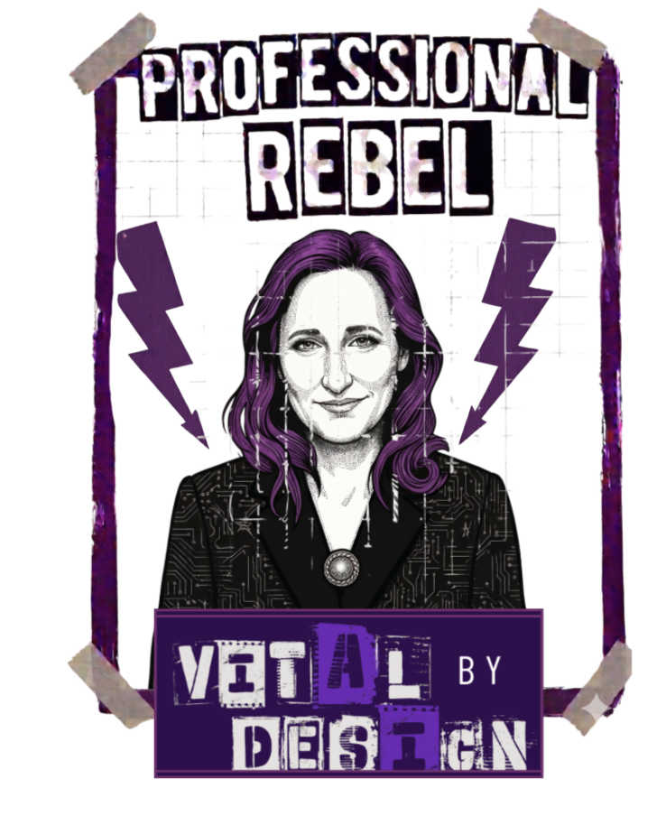
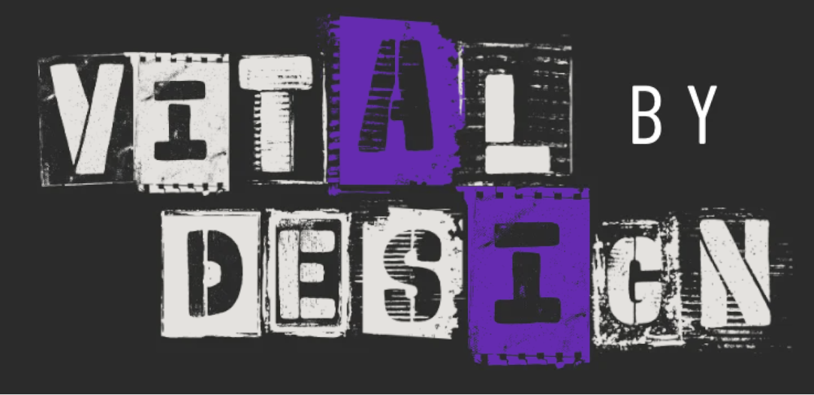
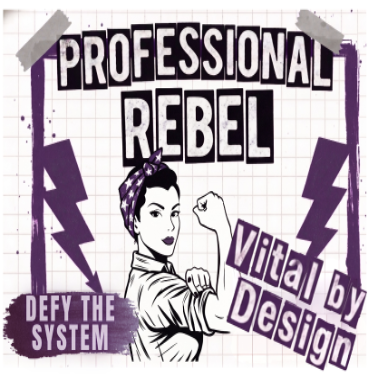
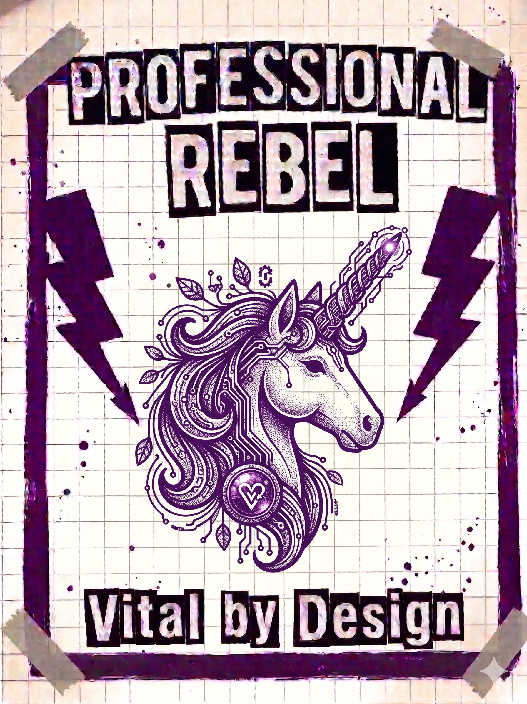
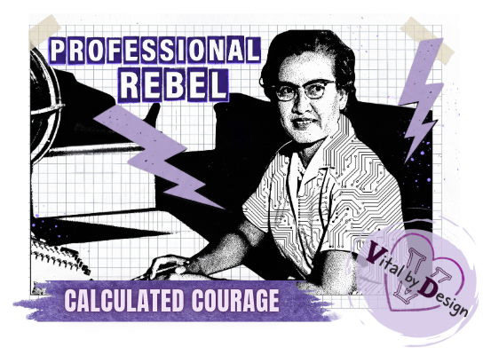

01
About
The story, mission, and design philosophy behind a pedagogy-first approach to AI and learning systems.
Open About

Vital by DesignLearning design. AI. Equity. Creative systems.
Human-centered learning grounded in real-world application, educator agency, and implementation reality.
Explore servicesIdeas worth building. Resources worth sharing. Questions worth chasing.
This is where I share the projects, resources, experiments, and occasional rabbit holes that come out of designing better ways to support teaching and learning. Take what helps. Adapt it. Challenge it. Build on it. Then tell me what you discovered.
01
The story, mission, and design philosophy behind a pedagogy-first approach to AI and learning systems.
Open About
02
Professional learning, consulting, workshops, implementation strategy, and learning design services grounded in real classrooms and real systems.
Explore Services
03
Experimental prototypes, AI sandboxes, rough-cut resources, prompt tests, and strange little builds that are still in motion.
Open the Lab
04
Polished resources, frameworks, templates, and share-ready materials that are stable enough to use, adapt, and pass along.
Open Resources
Take the slides. Borrow the ideas. Share freely.
Everything from my conference sessions live here: slides, activities, templates, AI prompts, classroom examples, and the resources we didn't have time to explore together.
Enough theory. Let's build something.